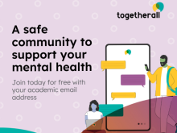

Welcome to Counseling and Psychological Services (CAPS)
University Health & Counseling (UHC) supports the health and well-being of the campus community. We are inspired to help students realize their potential and cope with the stresses of life and work.
UHC is made up of Counseling and Psychological Services (CAPS), which offers counseling services, and University Health Service (UHS), which offers medical services. This website is about CAPS. For more information about UHS, please visit the UHS website.
Stress Less

Feeling overwhelmed as a new semester begins? You are not alone!
Individual Peer Counseling
Individual Peer Counseling (IPC) is created to offer a new way to meet the needs of students across the University of Michigan.
Togtherall
Togetherall is an online, anonymous peer-to-peer communication tool available for free. It is clinically moderated, and allows users to seek a mental health community that prioritizes mental health conscious discussions.
Contact
Phone: 734-764-8312
Michigan Union530 South State Street
Suite 4079
Ann Arbor, MI 48109